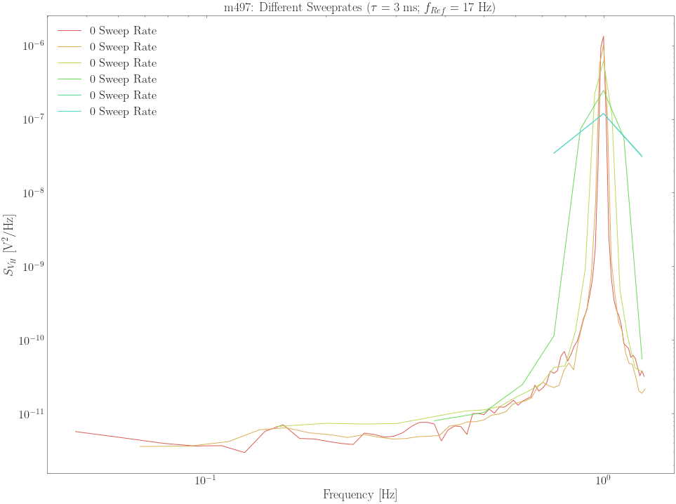
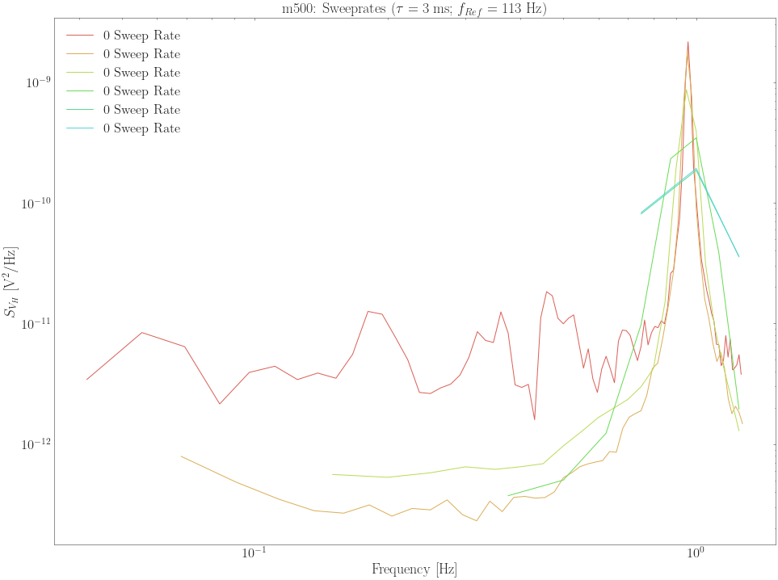
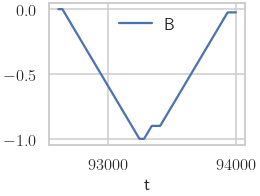
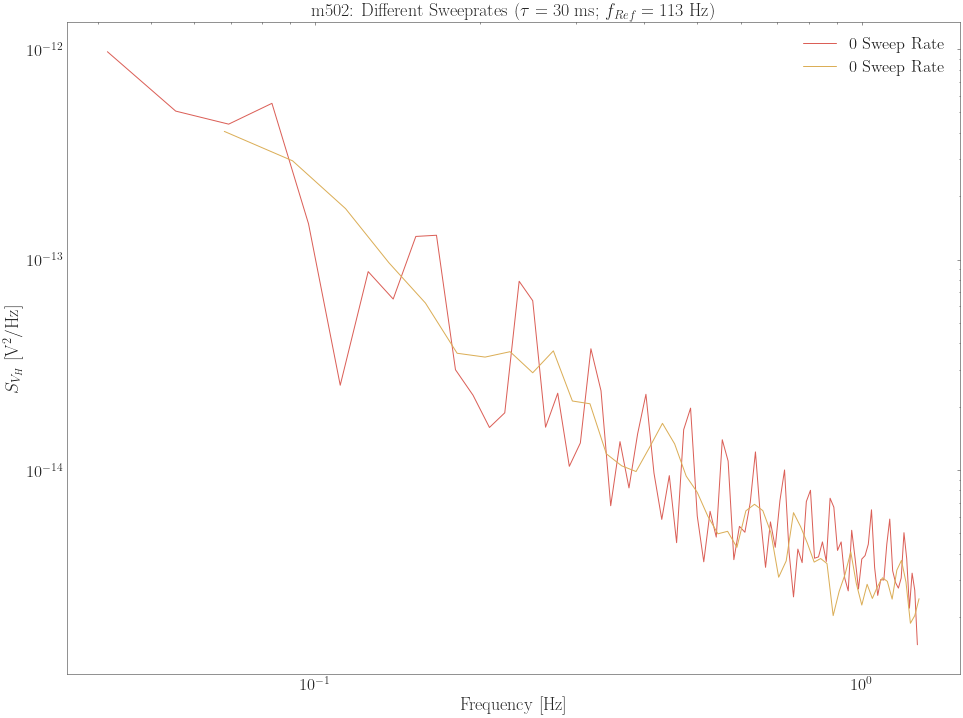
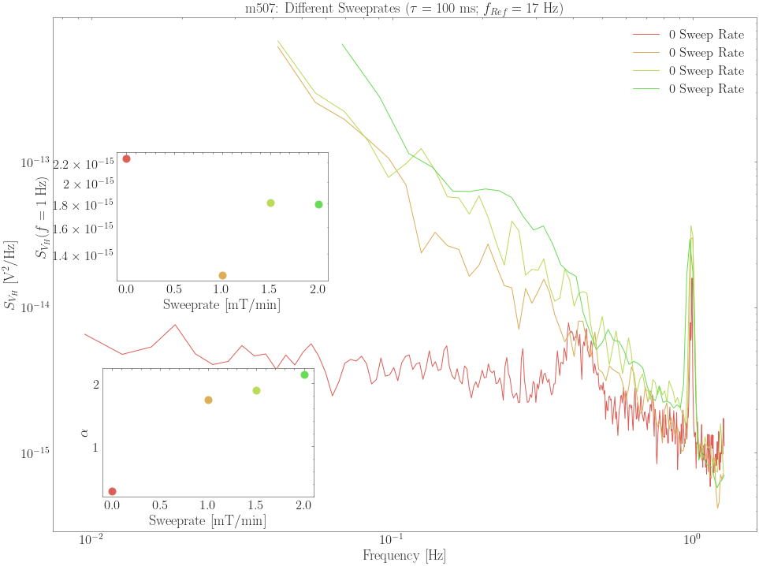
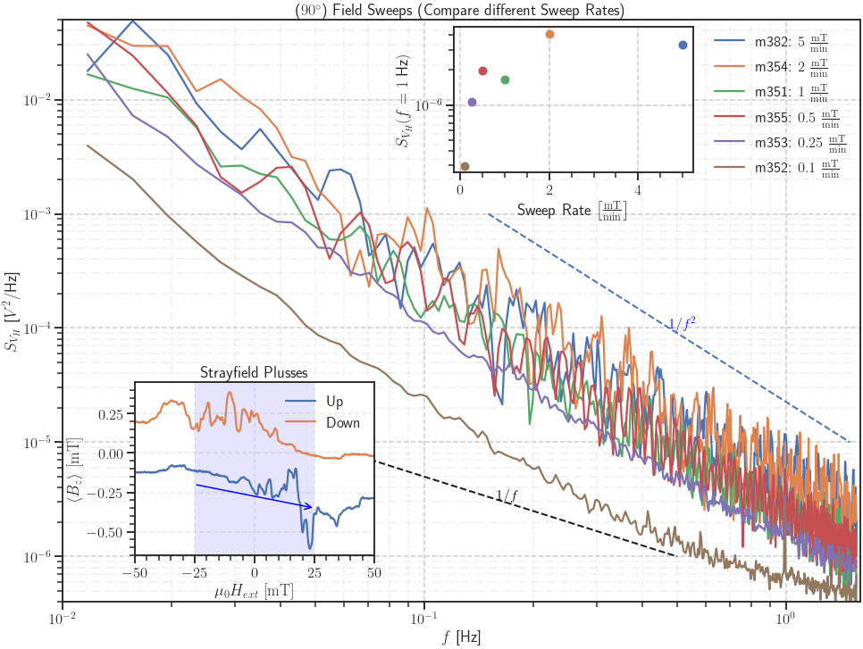

MFN: Compare Different Sweeprates (SR830 vs. SR785)¶
[1]:
%run test/basics.py
%matplotlib inline
import os
os.chdir('../../ana')
# IPython Interactions
import ipywidgets as wg
from IPython.display import display
Define Functions¶
[2]:
def load_data(datapath):
meas_data = {}
meas_info = {}
all_data = {}
for f in datapath:
f_info = ana.measurement.MeasurementClass().get_info_from_name(f)
sr = f_info['SR']
nr = f_info['nr']
meas_info[sr] = f_info
meas_data[sr] = pd.read_csv(f, sep='\t')
new_df = meas_data[sr]
new_df['Vin'] = float(sr)
if nr in all_data.keys():
all_data[nr] = pd.concat([all_data[nr], new_df])
else:
all_data[nr] = new_df
return meas_data, meas_info, all_data
Calc PSD¶
[3]:
def calc_PSD(meas_data):
meas_obj = {}
for sr, data_df in meas_data.items():
if len(data_df['Vx']) % 1024:
avg = len(data_df['Vx']) // 1024
d = data_df['Vx'].iloc[:-(len(data_df['Vx']) % 1024)]
else:
d = data_df.Vx
max_len = len(d)
data = {
'data': d,
'info': {
'Nr': meas_info[sr]['nr'],
'rate': 1 / data_df.time.diff().mean(),
'length': max_len * data_df.time.diff().mean(),
}
}
meas_obj[sr] = ana.RAW(data,
rate=data['info']['rate'],
nof_first_spectra=32,
calc_first = True,
downsample=False,
)
return meas_obj
Plotting functions¶
[4]:
#%matplotlib inline
import scipy.stats
def merge_data(meas_obj, cutoff_frequency=.9):
diff_voltages = pd.DataFrame()
for sr, m in meas_obj.items():
s = m.avg_spec
s = s[s.freq < cutoff_frequency]
if len(s) < 2:
continue
newdf = pd.DataFrame()
newdf['freq'] = s.freq
newdf['S'] = s.S
newdf['SR'] = float(sr)
diff_voltages = pd.concat([diff_voltages, newdf])
return diff_voltages
def plot_PSD_classic(diff_voltages, title, groupby_category='SR', group_name='Sweep Rate',
num=10, style=[['science'], {'context': 'talk', 'style': 'white', 'palette': 'bright',}]):
set_style(style)
c1 = sns.color_palette("hls", num)
sns.set_palette(c1)
fig, ax = plt.subplots(figsize=(16,12))
grouped = diff_voltages.groupby(groupby_category)
for group in grouped.groups.keys():
grouped.get_group(group).plot(x='freq', y='S', kind='line',
loglog=True, ax=ax,
label='%d %s' % (group, group_name),
xlabel='Frequency [Hz]',
ylabel='$S_{V_H}$ [$\\mathrm{V}^2/\\mathrm{Hz}$]',
)
ax.set_title(title)
return ax
f_max = (8/(2*np.pi))
Contour Plot¶
[5]:
from matplotlib import cm
from matplotlib.colors import LogNorm
def plot_PSD_contour(meas_obj, diff_voltages, title,
cutoff_frequency=.9,
groupby_category='SR'):
diff_voltages_contour = pd.DataFrame()
for sr, m in meas_obj.items():
s = m.avg_spec
s = s[s.freq < cutoff_frequency]
if len(s) < 2:
continue
diff_voltages_contour[float(sr[:-2])] = s.S
v = diff_voltages[groupby_category].unique()
v.sort()
frequencies = diff_voltages.freq.unique()
smin, smax = diff_voltages.S.min(), diff_voltages.S.max()
levels = np.logspace(np.log10(smin),
np.log10(smax), 10)
fig, ax = plt.subplots(figsize=(12,8))
cs = ax.contourf(v, frequencies, diff_voltages_contour,
norm=LogNorm(vmin=smin, vmax=smax),
levels=levels,
cmap=plt.cm.Blues,
)
cbar = plt.gcf().colorbar(cs, ax=ax)
cbar.set_label('$S_V^{SR} (f)$')
cbar.set_ticklabels(['%.1e' % _ for _ in levels])
ax.set_yscale('log')
ax.set_ylabel('$f$ [Hz]')
ax.set_xlabel('Sweeprate [$\\mathrm{mT}/\\mathrm{min}$]')
ax.set_title(title)
#plot_PSD_contour(meas_obj, diff_voltages, 'm506: Different Voltages ($\\tau = 100~\\mathrm{ms}$; $f_{Ref} = 17~\\mathrm{Hz}$)')
Load Data¶
m497¶
[6]:
datapath = glob('./data/MFN/m497/*')
datapath
meas_data, meas_info, all_data = load_data(datapath)
[7]:
meas_obj = calc_PSD(meas_data)
meas_obj.items()
[7]:
dict_items([('0.015', RAW (Nr. 497)
), ('0.0025', RAW (Nr. 497)
), ('0.005', RAW (Nr. 497)
), ('0.010', RAW (Nr. 497)
), ('0.0015', RAW (Nr. 497)
), ('0.020', RAW (Nr. 497)
)])
Plot PSD¶
[8]:
%matplotlib inline
Classic¶
[9]:
meas_obj
[9]:
{'0.015': RAW (Nr. 497),
'0.0025': RAW (Nr. 497),
'0.005': RAW (Nr. 497),
'0.010': RAW (Nr. 497),
'0.0015': RAW (Nr. 497),
'0.020': RAW (Nr. 497)}
[10]:
diff_voltages = merge_data(meas_obj, cutoff_frequency=f_max)
plot_PSD_classic(diff_voltages, 'm497: Different Sweeprates ($\\tau = 3~\\mathrm{ms}$; $f_{Ref} = 17~\\mathrm{Hz}$)')
[10]:
<AxesSubplot:title={'center':'m497: Different Sweeprates ($\\tau = 3~\\mathrm{ms}$; $f_{Ref} = 17~\\mathrm{Hz}$)'}, xlabel='Frequency [Hz]', ylabel='$S_{V_H}$ [$\\mathrm{V}^2/\\mathrm{Hz}$]'>

Contour¶
Load m500¶
[11]:
datapath = glob('./data/MFN/m500/*')
meas_data, meas_info, all_data = load_data(datapath)
meas_obj = calc_PSD(meas_data)
meas_obj.items()
[11]:
dict_items([('0.020', RAW (Nr. 500)
), ('0.0025', RAW (Nr. 500)
), ('0.010', RAW (Nr. 500)
), ('0.005', RAW (Nr. 500)
), ('0.015', RAW (Nr. 500)
), ('0.0010', RAW (Nr. 500)
)])
[12]:
diff_voltages = merge_data(meas_obj, cutoff_frequency=f_max)
plot_PSD_classic(diff_voltages, 'm500: Sweeprates ($\\tau = 3~\\mathrm{ms}$; $f_{Ref} = 113~\\mathrm{Hz}$)')
[12]:
<AxesSubplot:title={'center':'m500: Sweeprates ($\\tau = 3~\\mathrm{ms}$; $f_{Ref} = 113~\\mathrm{Hz}$)'}, xlabel='Frequency [Hz]', ylabel='$S_{V_H}$ [$\\mathrm{V}^2/\\mathrm{Hz}$]'>

[13]:
# plot_PSD_contour(meas_obj, diff_voltages, 'm499: Different Voltages ($\\tau = 3~\\mathrm{ms}$; $f_{Ref} = 113~\\mathrm{Hz}$)')
m501¶
[14]:
meas_obj.items()
[14]:
dict_items([('0.020', RAW (Nr. 500)
), ('0.0025', RAW (Nr. 500)
), ('0.010', RAW (Nr. 500)
), ('0.005', RAW (Nr. 500)
), ('0.015', RAW (Nr. 500)
), ('0.0010', RAW (Nr. 500)
)])
[15]:
datapath = glob('./data/MFN/m501/*')
meas_data, meas_info, all_data = load_data(datapath)
meas_obj = calc_PSD(meas_data)
diff_voltages = merge_data(meas_obj, cutoff_frequency=f_max)
title = 'm501: Different Sweeprates ($\\tau = 3~\\mathrm{ms}$; $f_{Ref} = 113~\\mathrm{Hz}$)'
#plot_PSD_classic(diff_voltages, title)
meas_obj
[15]:
{'0.0020': RAW (Nr. 501),
'0': RAW (Nr. 501),
'0.0015': RAW (Nr. 501),
'0.0005': RAW (Nr. 501),
'0.0010': RAW (Nr. 501)}
[16]:
df = pd.read_csv('./data/MFN/Test_measurements/m501.91_Temp_during_meas.dat', sep='\t', skiprows=3, names=['t', 'B'] + ['T%d' % _ for _ in range(6)])
df['dB'] = df.B.diff()
df[df.t < 9.4e4].plot(x='t', y='B')
[16]:
<AxesSubplot:xlabel='t'>

m502¶
[17]:
datapath = glob('./data/MFN/m502/*')
meas_data, meas_info, all_data = load_data(datapath)
meas_obj = calc_PSD(meas_data)
diff_voltages = merge_data(meas_obj, cutoff_frequency=f_max)
title = 'm502: Different Sweeprates ($\\tau = 30~\\mathrm{ms}$; $f_{Ref} = 113~\\mathrm{Hz}$)'
plot_PSD_classic(diff_voltages, title)
[17]:
<AxesSubplot:title={'center':'m502: Different Sweeprates ($\\tau = 30~\\mathrm{ms}$; $f_{Ref} = 113~\\mathrm{Hz}$)'}, xlabel='Frequency [Hz]', ylabel='$S_{V_H}$ [$\\mathrm{V}^2/\\mathrm{Hz}$]'>

m507¶
[18]:
glob('./data/MFN/m507/*')
[18]:
['./data/MFN/m507/m507_Plusses_90deg_RAW_Parallel_B_pm25mT_SR-0.0010_20200816_1000_I2-13-1_GBIP8-14-7_Vin-5V_R21-1MO_C21-11_T-15K_gate-0V.dat',
'./data/MFN/m507/m507_Plusses_90deg_RAW_Parallel_B_pm25mT_SR-0.0015_20200816_1000_I2-13-1_GBIP8-14-7_Vin-5V_R21-1MO_C21-11_T-15K_gate-0V.dat',
'./data/MFN/m507/m507_Plusses_90deg_RAW_Parallel_B_pm25mT_SR-0.0_20200816_1000_I2-13-1_GBIP8-14-7_Vin-5V_R21-1MO_C21-11_T-15K_gate-0V.dat',
'./data/MFN/m507/m507_Plusses_90deg_RAW_Parallel_B_pm25mT_SR-0.0020_20200816_1000_I2-13-1_GBIP8-14-7_Vin-5V_R21-1MO_C21-11_T-15K_gate-0V.dat']
[19]:
datapath = glob('./data/MFN/m507/*')
meas_data, meas_info, all_data = load_data(datapath)
meas_obj = calc_PSD(meas_data)
diff_voltages = merge_data(meas_obj, cutoff_frequency=f_max)
title = 'm507: Different Sweeprates ($\\tau = 100~\\mathrm{ms}$; $f_{Ref} = 17~\\mathrm{Hz}$)'
ax = plot_PSD_classic(diff_voltages, title)
inset2 = inset_axes(ax, width='100%', height='100%',
bbox_to_anchor=(.1, .5, .3, .25),
bbox_transform=ax.transAxes)
inset3 = inset_axes(ax, width='100%', height='100%',
bbox_to_anchor=(.08, .08, .3, .25),
bbox_transform=ax.transAxes)
grouped = diff_voltages.groupby('SR')
for group in grouped.groups.keys():
g = grouped.get_group(group)
fit_area = g.query('freq > %f and freq < %f' % (8e-2, 7e-1))
fit_area['lnf'] = np.log10(fit_area.freq)
fit_area['lnS'] = np.log10(fit_area.S)
fit = scipy.stats.linregress(fit_area.lnf, fit_area.lnS)
intercept, slope = fit.intercept, -fit.slope
voltage = group*1e3
inset2.plot(voltage, 10**intercept, 'o')
inset3.plot(voltage, slope, 'o')
inset2.set_xlabel('Sweeprate [$\\mathrm{mT}/\\mathrm{min}$]')
inset2.set_ylabel('$S_{V_H} (f=1\\;$Hz$)$')
inset2.set_yscale('log')
inset3.set_xlabel('Sweeprate [$\\mathrm{mT}/\\mathrm{min}$]')
inset3.set_ylabel('$\\alpha$')
/var/folders/nm/0s3x_nnn1ss1n7rd1px5gqsr0000gn/T/ipykernel_34002/89367565.py:19: SettingWithCopyWarning:
A value is trying to be set on a copy of a slice from a DataFrame.
Try using .loc[row_indexer,col_indexer] = value instead
See the caveats in the documentation: https://pandas.pydata.org/pandas-docs/stable/user_guide/indexing.html#returning-a-view-versus-a-copy
fit_area['lnf'] = np.log10(fit_area.freq)
/var/folders/nm/0s3x_nnn1ss1n7rd1px5gqsr0000gn/T/ipykernel_34002/89367565.py:20: SettingWithCopyWarning:
A value is trying to be set on a copy of a slice from a DataFrame.
Try using .loc[row_indexer,col_indexer] = value instead
See the caveats in the documentation: https://pandas.pydata.org/pandas-docs/stable/user_guide/indexing.html#returning-a-view-versus-a-copy
fit_area['lnS'] = np.log10(fit_area.S)
[19]:
Text(0, 0.5, '$\\alpha$')

Sweeprates SR785¶
[20]:
m = ana.Hloop(57)
eva = ana.HandleM(directory='data/SR785')
WARNING:Handle:Start loading folder: data/SR785/m382_MFN Plusses_T5K_sweep_100 mT to -100 mT_at -1T saturation_Rate 5mTmin_SR785_1.5Hz__aver10_Vin 5V_sens 5mV .dat
WARNING:Handle:Regex doesn't match: data/SR785/MFN_go to zero2.dat
WARNING:Handle:Regex doesn't match: data/SR785/Routine MFN No3.dat
/Users/jp/Projects/Code/method-paper/ana/ana/handle.py:103: DtypeWarning: Columns (0,1,2,3,4,5,6,7,8,9,10,11) have mixed types.Specify dtype option on import or set low_memory=False.
self.load_folder(file_list, **kwargs)
WARNING:Handle:Regex doesn't match: data/SR785/Test parallel down.dat
WARNING:Handle:Regex doesn't match: data/SR785/Routine MFN.dat
WARNING:Handle:Regex doesn't match: data/SR785/Routine MFN No2.dat
WARNING:Handle:Regex doesn't match: data/SR785/MFN_go to zero.dat
WARNING:Handle:Regex doesn't match: data/SR785/Test2 parallel down.dat
WARNING:Handle:Regex doesn't match: data/SR785/test_n1.dat
WARNING:Handle:Regex doesn't match: data/SR785/test_SR785_length5.dat
WARNING:Handle:Regex doesn't match: data/SR785/test_SR785_length.dat
WARNING:Handle:Regex doesn't match: data/SR785/test_SR785_length4.dat
WARNING:Handle:Regex doesn't match: data/SR785/test_SR785_length6.dat
WARNING:Handle:Regex doesn't match: data/SR785/test.dat
WARNING:Handle:Regex doesn't match: data/SR785/test_SR785_length3.dat
WARNING:Handle:Regex doesn't match: data/SR785/test_SR785_length2.dat
WARNING:Handle:Regex doesn't match: data/SR785/Routine Parallel measurements.dat
WARNING:Handle:Regex doesn't match: data/SR785/f.dat
[ ]:
[21]:
eva.style.set_style(default=True, grid=True,
size='talk', style='ticks', latex=True,
palette='deep')
lofm = {}
to_show = {
382: [("-M_s \\rightarrow -25",25), 'Plusses', 5],
354: [("-M_s \\rightarrow -25",25), 'Plusses', 2],
351: [("-M_s \\rightarrow -25",25), 'Plusses', 1],
355: [("-M_s \\rightarrow -25",25), 'Plusses', .5],
353: [("-M_s \\rightarrow -25",25), 'Plusses', .25],
352: [("-M_s \\rightarrow -25",25), 'Plusses', .1],
}
for nr, content in to_show.items():
lofm[nr] = ["$%s\\;\\frac{\\mathrm{mT}}{\\mathrm{min}}$" % (
content[2],
),{}]
fig, ax = eva.plot(lofm,
#fit_range=(2e-2, 5e-1),
#show_fit=True,
plot_settings=dict(
title='($90^\\circ$) Field Sweeps (Compare different Sweep Rates)',
xlim=(1e-2, 1.6e0),
ylim=(4e-7, 5e-2)),
f_settings=dict(
xmin=5e-2,
ymin=1e-5),
f2_settings=dict(
xmin=1.5e-1,
),
)
ax = plt.gca()
# Inset with Strayfield
with sns.color_palette('deep'):
inset = inset_axes(ax, width='100%', height='90%',
bbox_to_anchor=(.1, .06, .3, .33),
bbox_transform=ax.transAxes)
m.plot_strayfield(inset, 'Strayfield Plusses',
nolegend=True,)
inset.legend(['Up',# ($-M_S \\rightarrow +M_S$)',
'Down'])# ($+M_S \\rightarrow -M_S$)'])
inset.grid(b=True, alpha=.4)
inset.set_xlim(-50, 50)
inset.set_ylim(-.65, .45)
inset.set_xticks([-50+25*_ for _ in range(5)])
y1, y2 = -1, 2
inset.fill([-25, -25, 25, 25], [y1, y2, y2, y1], 'blue', alpha=.1)
inset.annotate("", xy=(25, -.35), xytext=(-25, -.2),
arrowprops=dict(arrowstyle="->", color='blue'))
# Inset showing fitted data
with sns.color_palette("deep"):
inset2 = inset_axes(ax, width='100%', height='100%',
bbox_to_anchor=(.5, .75, .3, .25),
bbox_transform=ax.transAxes)
for nr, content in to_show.items():
intercept, slope = eva[nr].fit(fit_range=(2e-2, 5e-1))
sweep_rate = content[2]
inset2.plot(sweep_rate, 10**intercept, 'o')
inset2.set_xlabel('Sweep Rate $\\left[\\frac{\\mathrm{mT}}{\\mathrm{min}}\\right]$')
inset2.set_ylabel('$S_{V_H} (f=1\\;$Hz$)$')
inset2.set_yscale('log')

[ ]: